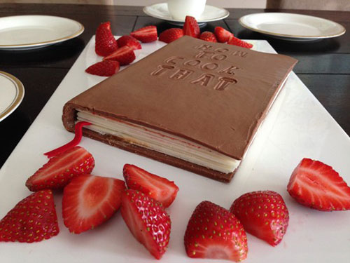
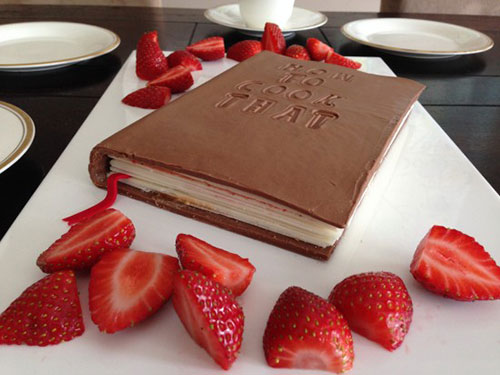

Why does C hocolate make us feel so good?
Monkey Tails
These chocolate-covered frozen bananas are a great summer treat. The ripe bananas have a wonderful creamy consistency when frozen, and the rich chocolate coating is delicious. You can vary the toppings to suit your taste, including drizzling with melted white or milk chocolate, or caramel. Roll in shredded coconut, chopped nuts, sprinkles, or other toppings.
Directions:
Insert 1 pop stick into the cut end of each banana. Place the bananas on a wax paper covered baking sheet and freeze until the bananas are frozen, about 2 hours.
Melt the chocolate and butter in a microwave-safe glass or ceramic bowl in 30-second intervals, stirring after each melting, for 1 to 3 minutes (depending on your microwave).
Dip the frozen bananas in the melted chocolate, spooning the chocolate over the banana to cover it completely. Roll in coconut if desired. Place the dipped bananas on the wax paper-covered baking sheet, and freeze until the chocolate is firm.
Whole-Wheat Dark Chocolate Zucchini Brownies
Whole-Wheat Dark Chocolate Zucchini Brownies are delicious and the grated zucchini adds tremendous flavor and texture dimensions.
- Preheat oven to 350 degrees F. Line 9-inch-square baking pan with foil.
Combine flour, cocoa, baking soda and salt in medium bowl.
Melt 3/4 cup morsels in large, microwave-safe bowl on HIGH (100%) power for 1 minute; stir until smooth.
Cool slightly. Stir in oil, brown sugar, granulated sugar, egg whites and vanilla extract. Stir in flour mixture; fold in zucchini. Spread into prepared pan. Sprinkle remaining 1/4 cup morsels over top.
Bake for 30 minutes or until wooden pick inserted in center comes out slightly sticky. Cool completely in pan on wire rack. Lift brownies from pan; cut into 16 squares. Store in airtight container for up to 5 days.
Dark Chocolate Crumb Bars
Dark Chocolate Crumb Bars have great visual appeal and are a tasty choice for a special dessert. Easy to make and sure to please your family and friends.
Directions:
-
Preheat oven to 350 degrees F. Grease 13 x 9-inch baking pan.
Beat butter in large mixer bowl until creamy. Beat in flour, sugar and salt until crumbly. With floured fingers, press 2 cups crumb mixture onto bottom of prepared baking pan; reserve remaining mixture.
Bake for 10 to 12 minutes or until edges are golden brown.
Combine 1 cup morsels and sweetened condensed milk in small, heavy-duty saucepan. Warm over low heat, stirring until smooth. Stir in vanilla extract. Spread over hot crust.
Stir nuts and remaining 2/3 cup morsels into reserved crumb mixture; sprinkle over chocolate filling. Bake for 25 to 30 minutes or until center is set. Cool in pan on wire rack. Cut into bars.